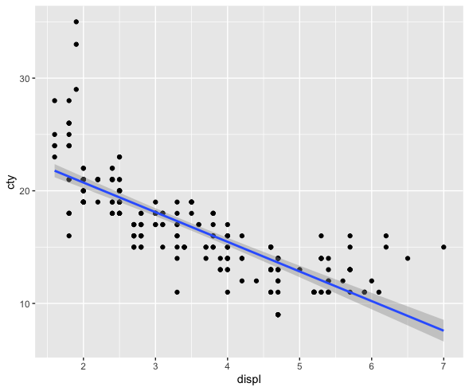

Predictive Analytics: Regression
DA 101, Dr. Ladd
Week 9
Let’s start by building on our hypothesis tests.
How do we test whether the means of two groups are the same?
The two-sample t-test: (This one is review!)
How do we test the mean of one variable?
The one-sample t-test:
# Run the test to see if the mean of hwy
# is greater than 0.
t.test(mpg$hwy, mu=0, alternative="greater")We can set the default mean (mu) to any value. Remember that the variable must be normally distributed.
How do we know if a variable is normally distributed?
The Shapiro-Wilk test:
Important note: the variable likely has a normal distribution if the p-value is higher than .05. Always compare with a histogram!
Can we make our own normally-distributed variable?
Let’s try out rnorm(). It takes 3 parameters: the number of observations, the mean, and the standard deviation.
You Try It!
Set Up
Install and load the palmerpenguins dataset. Then create a filtered dataset of only the Adelie penguins.
Make sure you’ve got tidyverse imported, too.
Ask yourself: what test or function would you run? How would you run it?
Challenges
Are the flipper lengths of Adelie penguins normally distributed?
Are the flipper lengths of Adelie penguins significantly less than 190mm?
Is there a significant difference in the flipper length of Adelie penguins vs. Gentoo penguins?
Let’s create a normally distributed variable with roughly the same mean and standard deviation as the flipper length of Adelie penguins, but with twice the number of observations.
Understanding Correlation
Let’s think about how we look at the relationship of two variables.
Remember the Pearson correlation coefficient?
This tells us the strength of the correlation, but is this correlation statistically significant?
There’s a test for this, too!
The correlation test:
Now we know the variables are correlated, and we know that this correlation is statistically significant. But we can learn more about the nature of the relationship…
But first, more challenges!
What is the correlation coefficient between bill length and flipper length in the
penguinsdataset?Is this correlation statistically significant?
Let’s verify our result visually, with a scatter plot! Bonus: How would we see if species matters? And how would we visualize the trend?
Linear Regression
We can use correlation coefficients and correlation tests to learn the strength of a relationship, but how do we learn the nature of a relationship?
Questions we might want to answer with regression:
- Does x influence y?
- Is crop growth rate improved by fertilizer?
- Do taller sprinters run faster?
Linear prediction models, also called regression models, help us to answer these kind of questions, which explore relationships.
A prediction model analyzes data that the researcher (you!) supplies, and calculates numerical coefficients to help with prediction.
Linear regression is just one type of model!
How does linear regression work?
For many kinds of data, it is possible to “fit” a line to a set of data points.
That line represents the connection between an ________ (x-axis) and a ________ (y-axis) variable.
And in this case, the ______________ variable is a function of the ________________ variable.
To define independent and dependent variables, you need to use your human brain.
Come up with a rationale for why you think they would be related.
This does not mean that x causes y! A regression can’t show that.
It’s not a good idea to just try to regress any set of variables together.
Correlation does not mean causation!!
Calculating simple linear regression
\(Y=mX+b\)
Can also be written as: \(Y=b_{1}X+b_{0}\)
\(Y=mX+b\)
\(Y\) is your dependent variable.
\(X\) is your independent variable.
\(Y=mX+b\)
Two coefficients:
\(m\) (or \(b_{1}\)) describes the slope of the line (and its direction).
\(b\) (or \(b_{0}\)) describes the height of the line when \(X\) is 0. This is called the y-intercept or simply the intercept.
We can provide 2 numeric variables (\(X\) and \(Y\)), and R will calculate the \(m\) and \(b\) values.
This is what it means to “fit” a linear model.
In theory, if you know any \(m\) and \(b\), you can use any new X value to predict a Y value. Wow!
Linear regression in R
Always start with exploratory analysis.
Do you have good reason to believe that a linear regression or predictive model would help? Is there a relationship between variables that’s worth learning about?

It looks like there might be a linear relationship!
We can see a general trend: as engine size goes up, fuel efficiency goes down. Now we’re ready to try modeling this relationship.
Beware!

For statistical modeling in R, we can use tidymodels.
First we choose our model, then we fit it to our data, then we can summarize or predict.
We have several ways of looking at the results
Interpreting Linear Regression
Running summary() throws a lot at you! Let’s go through it step-by-step.
“Call” shows the formula you used.
Call:
stats::lm(formula = cty ~ displ, data = data)This would help if you didn’t have the original code.
Residuals are the differences between the actual observed values and the ones the model predicted.
Residuals:
Min 1Q Median 3Q Max
-6.3109 -1.4695 -0.2566 1.1087 14.0064 Think of these as the “errors” that the modeling method produced. If the residuals are symmetrically distributed with the median close to zero, the model may fit the data well.
Coefficients show an estimate for the intercept (\(b\)) and the slope (\(m\)).
Coefficients:
Estimate Std. Error t value Pr(>|t|)
(Intercept) 25.9915 0.4821 53.91 <2e-16 ***
displ -2.6305 0.1302 -20.20 <2e-16 ***
---
Signif. codes: 0 ‘***’ 0.001 ‘**’ 0.01 ‘*’ 0.05 ‘.’ 0.1 ‘ ’ 1We get estimates and a p-value (Pr(>|t|)) for each coefficient. The coefficients tell us the nature of the relationship and whether it’s “significant.”
With a slope of -2.6305 and a very low p-value, this linear regression provides evidence that as engine displacment increases, fuel efficiency decreases!
For every additional unit of engine displacement, the expected fuel efficiency decreases by 2.6305.
Be careful not to imply that there is a direct causal link, especially without more evidence or studies.
\(R^{2}\) shows the amount (proportion) of variation in \(Y\) that is accounted for by \(X\).
Multiple R-squared: 0.6376, Adjusted R-squared: 0.6361
F-statistic: 408.2 on 1 and 232 DF, p-value: < 2.2e-16\(R^{2}\) ranges from 0 to 1. If it were 1, the variables would make a straight line. If it were 0, the x variable wouldn’t predict the y variable at all.
In this example, \(R^{2}=0.6376\), so engine displacement accounts for about 64% of the variation in fuel efficiency.
There’s no rule for what makes an \(R^{2}\) “good.” Consider the context and purpose of your analysis!
In an analysis of ecology or human behavior (very unpredictable) an R2 of 0.20 or 0.30, might be considered good. In an analysis predicting mechanical repairs, or recovery from medical procedures, an R2 of 0.60 or 0.70 might be considered very poor.
The \(R^{2}\) is also accompanied by a p-value.
Multiple R-squared: 0.6376, Adjusted R-squared: 0.6361
F-statistic: 408.2 on 1 and 232 DF, p-value: < 2.2e-16This is a significance test for the probability of observing a result this extreme, assuming the true \(R^{2}\) is 0. Here the p-value is very small: there’s a statistically significant relationship.
Visualize and Validate Your Model
Look at the original data, but with a line of best fit.
Also called a “regression line.”

Create a Q-Q plot of the residuals.
The quantile-quantile plot shows how closely your residuals follow a normal distribution.
You Try It!
Challenge
With a partner, perform a linear regression to determine how the number of years a worker is exposed to cotton dust is related to a measure of lung capacity: the peak expiratory flow rate.
You can download the data here.
Follow these steps:
- Create a new RMarkdown file (you’ll email this to me at the end of class).
- Determine which should be your dependent and which should be your independent variable.
- Create a scatter plot with a trend line to see if you think there is a linear relationship. Form a hypothesis with your partner!
- Using
tidymodels, create a linear regression model and fit it to the data.
(continued on next slide)
Follow these steps (continued):
- Interpret the summary of the model completely and accurately and in terms of the data.
- Validate your model with a Q-Q plot of the residuals. Is this model valid?
- Email me your RMarkdown file with all of the code, visualizations, and interpretations.